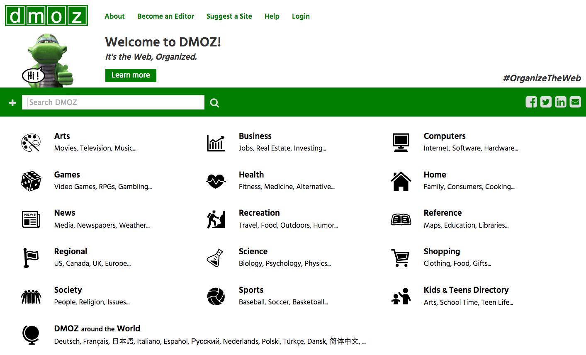
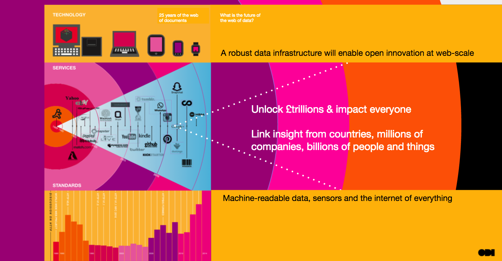

We need to learn how to search the web of data
Search for the web of data is still in the portal era, but portals do not meet all user needs. Imagine a world where you could search for, find, understand, trust and use data as easily as you can for news. Peter Wells explores what's possible
Many data portals exist, especially open data portals. Our team at ODIHQ and members of our global network have helped people to build data portals and get them used, so they can create impact.
Despite the growing number of data portals, we are often asked "Do you know where I can get X data?" Sometimes there is an expectation that the Open Data Institute has ‘all the data’, and some people even ask us “Where should we publish our data so people can find it?” We’ve also been getting requests from people trying to create a data marketplace, where data can be bought and sold.
Part of our answer to these questions is that we need strong data infrastructure and to learn how to search the web of data. This is essential to help make data flow more freely and get more value from data.
The web of documents
The web that most of us are familiar with consists of documents, or webpages as they are more commonly known. About 4.75 billion of them. Many of the documents are linked together, and those connections add value. In a blog, newspaper article or academic paper, we can use links to build on previous discussions or point to factual sources. They help us to explore the web of documents.
There were many fewer documents in the early days of the web but people still needed to be able to discover things. The first efforts at manually maintaining an index were performed by Sir Tim Berners-Lee, the ODI’s President and Co-Founder. People could go to the list and then jump to pages that looked interesting.
We then created portals, such as DMOZ and the early Yahoo!. These were curated lists of websites and pages organised by particular topics. As the web scaled up, portals were no longer viable, and people moved to metadata search engines, such as Altavista and Lycos, which used metadata that had been manually set in the webpage and provided information about the document. Search was more scalable because pages were discovered automatically, but results were unreliable and easily manipulated. The next generation of web discovery came with PageRank-style search, such as Google, which used many more cues for search, including an understanding of content, usage and linking. This third generation learnt how to look within the web of documents to discover how relevant each document would be for users.
 The DMOZ homepage
All of these methods still exist, and meet different needs.
Newsletters and blogs provide curated lists of interesting content for particular audiences. Metadata search exists in sectors such as academia or art, through services like Base or Europeana. Shopping sites like Amazon or Etsy have front pages much like portals. In the early days of the web, every site had their own search engine, as these sites do, but it is now much less important. Meanwhile, search engines like Google, Bing, Yandex and Baidu continue to build on the third-generation model. Search engines are the homepage for most of the web.
It was vital that we learnt how to build these different types of search. The web of documents could not scale until search became the primary means of discovery.
Data infrastructure and the web of data
The billions of people, sensors and services that are connected to the web produce, publish and use data. Data benefits from network effects to an even greater extent than the web of documents. Data becomes more useful and creates more value as more people use and maintain it.
A web of data is evolving that sits alongside and behind the web of documents. This web includes data from across the spectrum of closed, shared and open data. Open data that anyone can use for any purpose; shared data that only provide access to certain organisations or to people who pay for a licence; and closed data that can only be accessed by people within an organisation.
Data is infrastructure. Data infrastructure that is as open as possible, built for the web and respects privacy creates the most value. It builds trust and maximises the number of connections that can be built.

Search for the web of data is still in the portal era
Search for the web of data is still in the portal era, but portals do not meet all user needs. Searching the web of data is different from searching the web of documents. Data needs more context. People searching for data need to be able to find it, access it and understand its contents. Depending on what they want to use it for, they may also need to understand its licensing, provenance, granularity, timeliness and relevance.
Yet search in data portals and marketplaces relies on manual curation, metadata and text descriptions whose quality varies significantly. Users suffer, people can’t always find what they need, data gets used less than it could and we get less value from data that people have published.
This is not the fault of portals. But we are trying to use them for too many uses because we lack other options. We have not yet developed the future generations of search within the web of data in the same way that we developed search within the web of documents.
We need better ways to search the web of data
There are many things that we need to do to strengthen our data infrastructure and maximise the value we get from data, but learning how to search the web of data is one of the most important. We need to learn how to do this if the web of data is to scale and realise its full potential.
Some of the ODI team are working on this problem as we explore better ways to publish and search data. Our work forms part of a larger research community looking at how to scale the web of data.
Portals and curated lists will still exist, just as they still exist in the web of documents, but to maximise impact we need other ways to search the web of data too. Imagine a world where you could search for, find, understand, trust and use data as easily as you can for news.
Making it easier to search will make it easier for data to flow around our economy, for organisations to get more people using the data they make available, for data innovators to find the data they need to build new services and to increase the value that data is bringing to our economies and societies.
We should not be investing in building bigger and bigger portals. We need to take the next step and learn how to search the web of data.
If you would like to discuss our work, or any of your work that is related, contact [email protected].
If you have ideas or experience in open data that you'd like to share, pitch us a blog or tweet us at @ODIHQ.